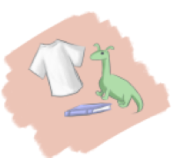
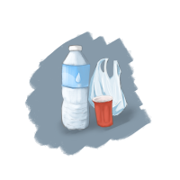

People often throw out items without giving a second thought. When looking at what some people consider “trash” can be really interesting to look or analyze over. You may find hidden narratives of the owner’s life. With this idea, I decided to record and share my trash to allow myself to take some time to analyze the things I discard without thinking about it. I believe that by recording these wastes, I will begin to realize things about myself that I did not know or thought deeply about.
I was inspired by other people that were also curious about trash and waste such as Sarah Newman and Brian Thill. I've come to see that each piece of waste is not simply an object rendered useless, but a signifier of the choices we make. Sarah Newman reminds us that what we dismiss as “junk” can be rethought as an old culture’s memory. She adds on how many folks believe archeology is the “science of rubbish” due to the belief that all the things left behind were unwanted or invaluable, when really some were actually valuable and served purpose. Newman believes that everyday discarded items have both beauty and personal meaning. If we pay close attention to them, they can show us parts of our social and emotional lives. She sees trash not as something to throw away, but shows how our values change over time. Brian Thill's ideas on consumer culture have helped me see how waste connects to our identity. He believes that the things we buy and then throw away reflect our inner priorities and social trends. Even everyday discarded items can reveal larger cultural and economic patterns. In his view, throwing things away quietly criticizes a system that often values convenience over thoughtful choices.
 While recognizing the hidden stories and sentimental value in our "trash" can offer deep insights into who we are, there’s a risk in overthinking it. Focusing too much on every discarded item might lead some to hoard, turning these treasures into burdens rather than meaningful reflections. This hoarding not only creates personal clutter that can affect mental well-being but also contributes to environmental harm through the accumulation of unnecessary items. The article "How Hoarding Relates to Climate Change" explains that there’s a downside to overvaluing every discarded item. When we start to see trash as a collection of personal history, it can lead to hoarding. An excessive accumulation of possessions and items that not only clutters our lives but also has serious environmental consequences. Excessive hoarding demands more space, drives higher energy use, and increases resource consumption, all of which contribute to climate change. Balancing our appreciation for these hidden stories with a mindful approach to consumption is key to protecting both our well-being and the planet.
 It can be a bittersweet experience to let go of items that once held significant value, as they carry memories of who we were and what we cherished. But don’t worry! Because this sense of loss can be transformed into a creative and great outlet. Instead of discarding these items as mere waste, we have the opportunity to reimagine and repurpose them into art. By doing so, we not only honor the past embodied in these objects but also give them a renewed purpose, turning what was once forgotten into a vibrant expression of creativity and sustainability. For example, this has been done by a plastic removal website. This page shows a variety of people’s recycled plastic trash turned into beautiful art. While helping the reduction of plastic for the environment, they have also created these amazing pieces. Learn more about plastic art here!
After learning and reading about these studies on trash, I have decided to make my project about more personal reflection with a broader social message to everyone out there. Each item I record acts as a small piece of a larger picture that shows my individual behavior and overall social trends from the outside world. However, over time these pieces might reveal changes in our habits, hidden preferences, and shifts in personal values. For example, changing brands for certain items. However, it is important to acknowledge what items are not as valuable to us and although they hold bright memories, sometimes they must be let go. Each piece of trash tells a story. This could be a broken gadget that signifies a hobby or interest, packaging that hints at dietary choices or favorite brands, or everyday items that reveal routines and habits. By categorizing and analyzing these items, patterns may emerge that highlight underlying behaviors or shifts in personal priorities over time. This allows us to get a deeper understanding of ourselves and I believe that is important for everyone.
Inspired by voices like Newman and Thill, I see these remnants not merely as trash, but as pieces of a larger mosaic that capture our evolving values. However, it is crucial to strike a balance between appreciating these sentimental items and overvaluing them, risking hoarding and its environmental consequences. By recording and repurposing what we discard, we honor our past while encouraging responsible, sustainable consumption.